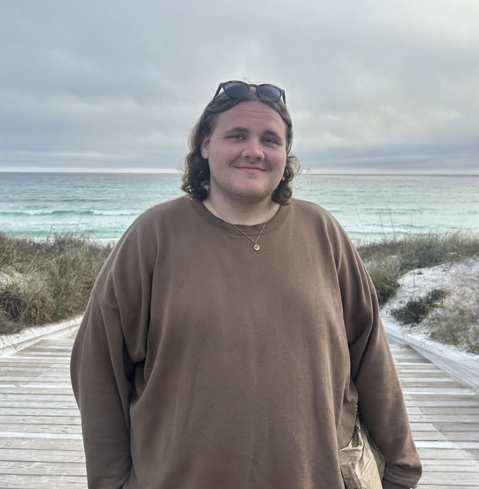
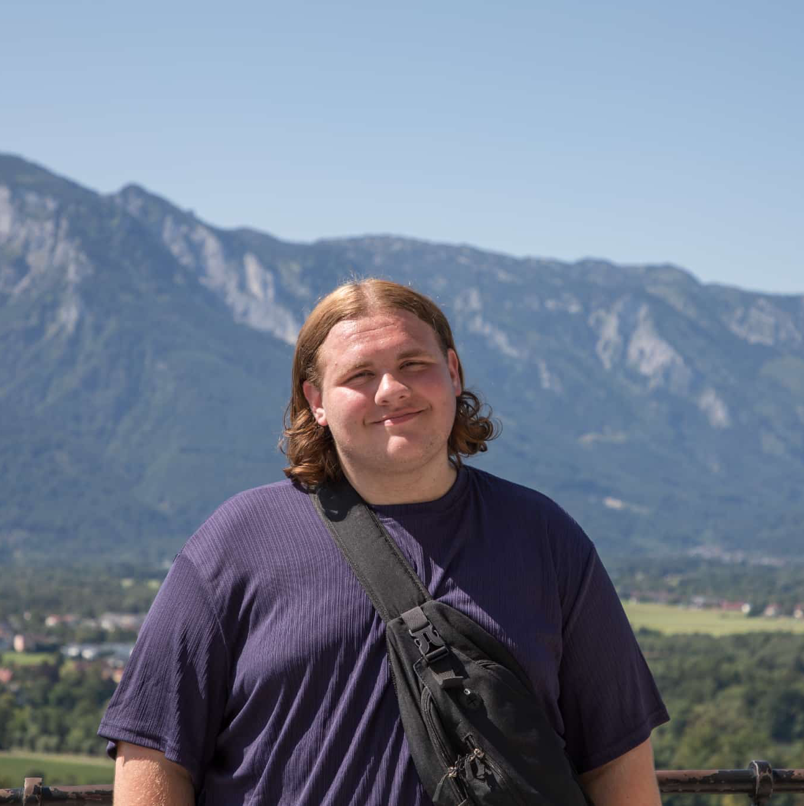
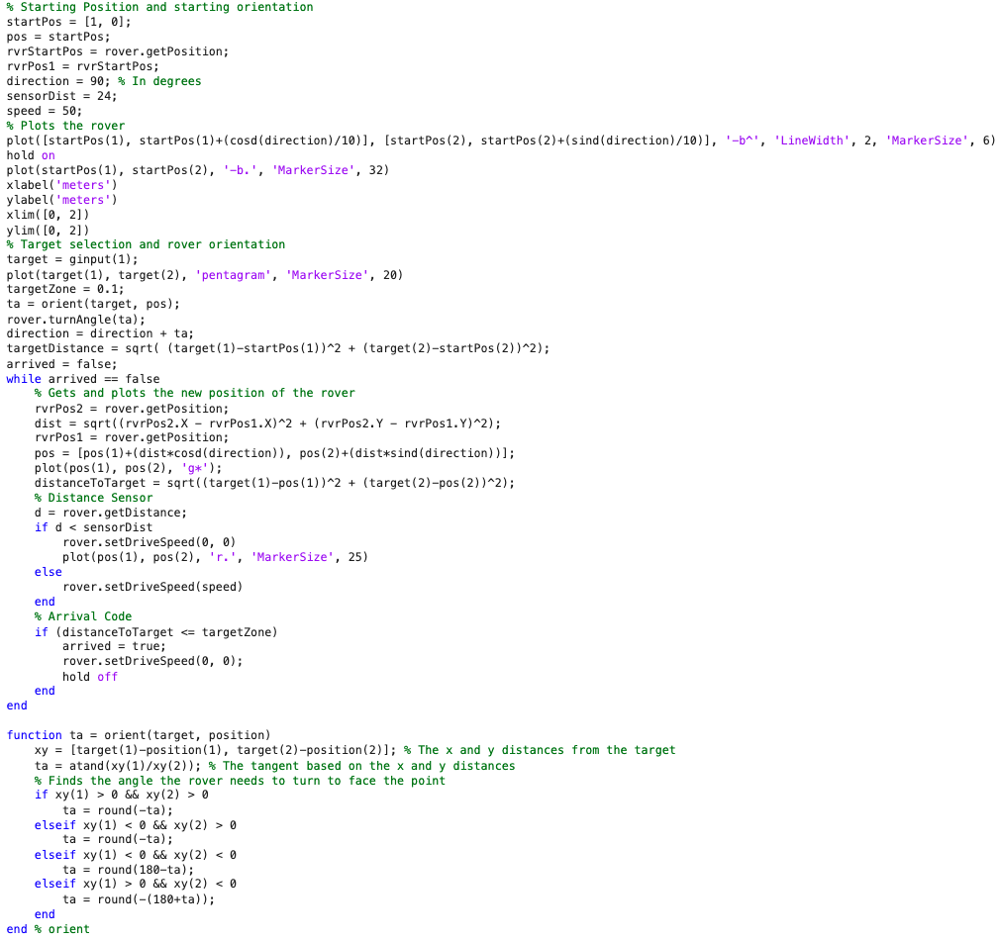
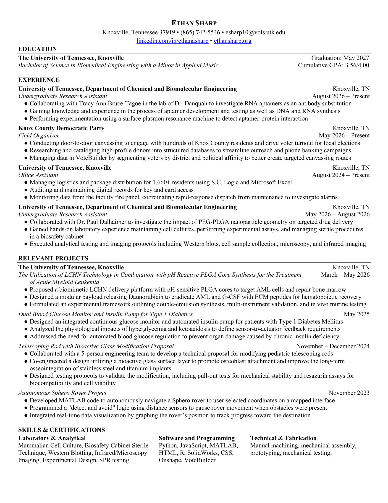

Ethan Sharp
BS-BME
Ethan Sharp
BS-BME
Ethan Sharp is a senior at the University of Tennessee, Knoxville. He is majoring in biomedical engineering at the Tickle College of Engineering with a concentration in theraputics and medical device design. He is also minoring in applied music at the Natalie L. Haslam College of Music. He is an active member in the UT Cello Studio and plays the cello in the UT Symphony Orchestra. Ethan was born and raised in Knoxville and attended highschool at Hardin Valley Academy. After Ethan graduates, he plans on pursuing his doctorate in biomedical engineering and hopes to become a professor and lab director at a university.
Learn More →
My name is Ethan Sharp. I am a senior biomedical engineering major pursuing both the therapeutics and medical device design tracks at the University of Tennessee, Knoxville Tickle College of Engineering. I am also minoring in applied music at the UT Knoxville Natalie L. Haslam College of Music. I am an active member in the UT cello studio and play the cello in the UT Symphony Orchestra. I started playing cello in 2009, a month before my fourth birthday, and have continued to play ever since. I was born and raised in Knoxville and graduated from Hardin Valley Academy in 2023.
I have always known I wanted to pursue a career in STEM, but I was not always confident in which field interested me most. In the early stages of my college search, I developed an interest in chemical engineering and thought that was what I wanted to pursue. I ended up deciding on Biomedical Engineering as it more closely aligned with my specific interests and my love of both chemistry and biology. I enjoy learning about and working with a wide variety of bodily systems and applications, but I am most passionate about cancer research and nanoparticle drug delivery, which often go hand-in-hand.
Through some academic assignments and out of personal interest, I have extensively researched the treatment and pathology of cancer, more specifically the application of nanoparticle delivery for chemotherapy. I took Intro to Drug Delivery in the spring semester of my junior year and fell in love with the subject. For my final project, I researched and designed a primary leukocyte-coated lipid nanoparticle delivery mechanism to deliver the chemotherapy drug daunorubicin for the treatment of acute myeloid leukemia. After submitting that project, I continued to develop it under the instruction of Dr. Elizabeth Barker in the biomedical engineering department at UTK. Once I had sufficiently developed my research and design to my standards, I submitted the paper to PURSUIT—the undergraduate academic research journal at the University of Tennessee. I am still awaiting a response from them.
In the summer of 2026, I had the opportunity to work alongside Dr. Paul Dalhaimer, a professor in the chemical and biomolecular engineering department at the University of Tennessee, in his research lab. His research focused on a very similar subject to the one I had been previously pursuing: drug delivery utilizing nanoparticles in the human body. Specifically, he was studying the role geomtric shape plays in drug delivery by comparing spherical and cylindrical PEG-PLGA nanoparticles. In this experience, I was able to learn a variety of skills, including starting and maintaining cell cultures, designing and performing cell culture experimentation, running Western blot tests, collecting cell samples, infrared imaging, microscopy imaging, and sterile procedures while utilizing a biosafety cabinet.



In November of 2023 in my EF 230 class at the University of Tennessee Knoxville, I participated alongside my lab partners to create the code in matlab to operate a sphero rover to excecute a specific function. Our project had the user select on a map where they wished the rover to go, then the rover would orient itself to face the point and drive to the destination. Along the way, the rover stopped for any obstacles in front of it and waited for them to pass before continuing. Thoughout the drive, the rover graphed its position to show the user how far along it was to reaching its destination. Below is the master code used to control the rover as well as the orient funciton used in the master code to orient the rover in the direction of the destination.

In April of 2023 in my EF 152 class at Pellissippi State Community College, me and a group of my peers built a davinci hammer powered by water. I built the entirety of the machine except for the water wheel. The image on the right shows my contribution to the project. The video shows someone manually rotating the wheel because the class did not have the water pressure needed to test the machines, but in a real world application, it would be powered by a strong water stream.
In November of 2022 in my EF 151 class at Pellissippi State Community College, me and my lab partners built a rube goldberg machine that's purpose was to squeeze the entirety of a tube of toothpaste onto a glass plate. Our machine started with a water bottle that poured into a bucket. When the bucket became heavy enough, it pushed down a board with a car on the other end. The board would then incline which caused the car to roll down. The car had a needle attached to it and it rolled into a balloon with another board balanced on it. When the balloon popped, the board fell and caused a dumbell to roll down onto a path. The right weight on the dumbell ran over the toothpaste which squeeze its contents onto the plate. This experiement provided hands on experience and research to understand and calculate energy transfer in a system.
I wrote this paper as an assignment for BME205 Anatomy and Physiology for Biomedical Engineers. The assignment was the design a device to diagnose or treat a disease of any bodily system. I chose the endocrine system and Type 1 Diabetes Mellitus as my disease. My innovation was a combination blood glucose monitor and insulin pump for type 1 diabetics.
Open in new tab →I wrote this paper as an assignment for BME205 Anatomy and Physiology for Biomedical Engineers. The assignment was to design a device to diagnose or treat a disease of the musculoskeletal system. I chose Osteogenesis Imperfecta and my innovation was to include bioactive glass.
Open in new tab →I wrote this paper as an assignment for BME205 Anatomy and Physiology for Biomedical Engineers. The assignment was to design a device to diagnose or treat a disease of the cardiovascular system. I chose Marfan syndrom and designed an internal aortic implant to detect aortic root dissection before it occurs.
Open in new tab →I wrote this paper as an assignment for BME205 Anatomy and Physiology for Biomedical Engineers. The assignment was to design a device for organ replacement or bridge to transplant. I could choose any organ, including a blood substitute. I chose ECMO which is commonly used as a bridge to transplant for heart and lung transplant surgery.
Open in new tab →I wrote this paper as an assignment for BME205 Anatomy and Physiology for Biomedical Engineers. The assignment was to design a device to diagnose or treat a disease of the nervous system. I chose Alzheimer's disease and designed a patch device to detect early indicators of Alzheimer's onset through specific biomarkers.
Open in new tab →I and a group of my peers wrote this paper as an assignment for BME474. The assignment was to write a proposal to assess the safety and efficacy of a new biomedical device. We had the flexibility to choose to study an established biomaterial for a new application, a modification to an existing biomaterial, or a fully new biomaterial.
Open in new tab →